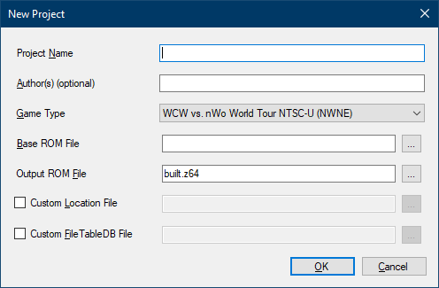
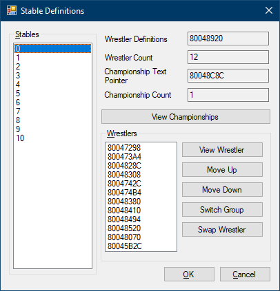

Version 0.0.0.29 (August 12th, 2023)
Program and Manual by freem
https://vpw.ajworld.net/
https://github.com/AKI-Club/VPWStudio
Though each game shares a similar design, the implementation, data structures,
and other details can be different for each game.
(All game-specific sections
are external (i.e. separate from the main manual).)
VPW Studio was primarily created for my own use. I have spent over two decades learning about the internals of these games, and a lot of this program assumes that you either know the necessary information, or you know where to get it.
This program does NOT hold your hand, and it is not particularly user-friendly at this time. You have been warned.
VPW Studio is a ROM hacking tool for the games in AKI Corporation's Virtual Pro-Wrestling series. The initial focus is on AKI's Nintendo 64 games, though support for the PlayStation 1 AKI wrestling games is planned for later. The primary inspiration for VPW Studio is the Goldeneye Setup Editor, which works directly on game data. This allows hacks to work on console, assuming you follow all of the internal "rules" of the game and the various (console and game-specific) data formats.
When work on this program began in 2018, the primary method of making changes to AKI's N64 wrestling games involved GameShark codes and emulator-only plugin-based texture replacements. Anyone who wanted to play projects using these methods on the original hardware could not fully do so. The replacement textures in these projects are often higher resolution than the originals and typically use more than 256 colors. Both of these attributes combine to make a situation that can't reasonably be handled with the N64's limited amount of texture RAM. GameShark codes pose their own problems, as you have to decide if you want to use a real GameShark, or rely on your flash cart's support for GameShark codes. It's possible to use GameShark hardware with the 64drive, for example, but you have to load the ROM over USB via a command line tool, and you still have to deal with the GameShark's finicky hardware, which can freeze the game if you look at it wrong or mess up when pressing the GS button. The stock Everdrive64 OS supports GameShark codes, but only a limited amount, and without any clear way to separate and label codes. (Perhaps a third party OS fixes this; I am not sure.) No matter what route you take, you'd be best served finding a way to import codes from a text file, as the amount of GameShark codes these projects typically have is in the thousands. That's not an exaggeration, either:
Every attire [in AKI Evolution] requires anywhere between 842 and 1,043 lines of [GameShark] code[s].-Chuckiepk on twitter, September 4th, 2021
VPW Studio aims to make it easier to change the existing game data, reducing the need for GameShark codes that do the same thing. However, VPW Studio can't replace all the features of a GameShark, as it works on the ROM level, and doesn't interact with the game while it's running. This means you should not expect VPW Studio to let you create new match types or AI behavior, among other things. Another key point is the term "change", as adding new items to the game can require editing multiple sections, and is 99% likely to require various pointers to be rewritten to point to new locations. That's even before you account changing the game code to deal with file ID assumptions (e.g. the games assume that the animation file IDs lie in certain ranges), which are different per game, and not all the same, either. VPW Studio is not equipped to handle this situation, which is better handled by a full disassembly of the game(s).
Even with these limitations, it's possible to use VPW Studio (along with some other tools) to create a ROM hack of AKI's wrestling games on Nintendo 64 that will work on real hardware. In fact, VPW Studio largely owes its existence to the Virtual Pro-Wrestling 2 freem Edition hack, and vice versa.
Currently, only the AKI wrestling games on the Nintendo 64 are supported:
| Game Name | Supported Releases |
|---|---|
| WCW vs. nWo: World Tour | NTSC-U v1.0, NTSC-U v1.1, PAL |
| バーチャル・プロレス64 (Virtual Pro-Wrestling 64) |
NTSC-J |
| WCW/nWo Revenge | NTSC-U, PAL |
| WWF WrestleMania 2000 (WWFレッスルマニア2000) |
NTSC-U, NTSC-J, PAL |
| バーチャル・プロレス2 〜王道継承〜 (Virtual Pro-Wrestling 2) |
NTSC-J |
| WWF No Mercy | NTSC-U v1.0, NTSC-U v1.1, PAL v1.0, PAL v1.1 September 2000 prototype/pre-release (Partial read-only support) |
Note that not every game supports every portion of VPW Studio. Supported games are listed in the specific sections for each tool.
Nintendo 64 games are relatively easier to edit and rebuild, being a single ROM image. When it comes to hacking games on disc-based systems (e.g. PlayStation, GameCube, XBox), extra challenges are added (such as building a proper disc image so the game can run on real hardware).
Support for AKI's PS1 wrestling games (Virtual Pro-Wrestling and WCW vs. the World) is not the primary focus at the moment, but small steps are being taken towards supporting formats the PS1 games use. Adding proper support for hacking the PS1 games in VPW Studio would require a number of non-trivial UI changes, as well as Project File differences and various other under-the-hood details that need changing. "Full" PS1 game editing support support will rely on external tools, especially for video, music, and disc image creation.
Originally, support was also planned for the AKI-developed Def Jam games (primarily Def Jam Vendetta and Def Jam: Fight for NY) after adding support for the two PlayStation 1 games. As of August 2021, the Def Jam games are officially out of scope for VPW Studio. A new, purpose-built tool would be a better solution for the Def Jam games.
There will be no attempt to allow project building for prototype versions of the games. This may or may not change in the future.
In order to use VPW Studio, you'll need a few things.
Aside from a hex editor, an image editor, and a hex-capable calculator, you'll probably want some other tools on hand.
AkiModel import/export plugins by Grix.This program is provided as-is, with no warranties or technical support given.
The program is primarily the work of one person, and they do not have the capabilities to be both the primary developer and personal/private technical support (without detriment to development time and/or developer sanity).
The few times I have tried to offer private one-on-one technical support, I ended up getting angry at myself for not having enough patience to deal with people. Therefore, I (freem) can not offer private one-on-one technical support for VPW Studio. Please do not contact me directly for technical support. This includes, but is not limited to, e-mails and direct/private messages. Yes, I made the program, but that does not mean I have the time to solve everyone's problems, nor do I have the patience to walk everyone through every possible situation that could come up.
Since there is no "official" technical support channel, you will have to turn to the community. Though a large number of gaming communities have abandoned web forums as a communication/information source, the AKI hacking community has too much of a history with them ("HACKERS CLUB", "The No Mercy Zone", JamStubbs' archive, and many more) to just abandon them for the "fancy new thing". Or, to put it another way, Discord didn't exist back in 2000, and ezBoard was a decent enough free forum host, so we all just went with that. Fast forward two decades, and we're still primarily using forums, because information rot is a very real problem.
With all of that said, here are some forums where you can ask for VPW Studio technical support:
Posting your problems and questions in a public place has a few benefits:
Any bugs with the program should be reported on the GitHub Issues page. When filing a bug report, please make it a point to include the following information:
Also, if what you're trying to do worked in a previous version of VPW Studio, please note that, along with the last known version where it worked.
You may be asked to provide an example project (and files) if the problem can not be easily replicated by the development team. To prevent various issues on all ends, please make a new project demonstrating the issue, and submit that (along with any other relevant files) if requested. We do not want to be responsible for anyone's project being "leaked" via bug reports.
Note: If VPW Studio tells you something is currently unimplemented, that is not exactly a program bug. It's merely a reminder that the program is incomplete. There is no need to report these items on the Issues page, unless there is no "incomplete" message given when using them.

The main form appears when you boot VPW Studio. Most of the functionality is disabled until a project file is opened or created, though there are a few tools that don't require a project.
VPW Studio has a small set of options, primarily targeted towards the building and playing process. Select Tools → Program Options to open the dialog.
The "N64 Emulator" section of the Program Options dialog allows you to set up an N64 emulator to use for testing the changed ROM.
The "Build" portion of the Program Options dialog currently only contains an option to modify the verbosity of the build log. The default option is "Quiet" (as of Pre-Alpha Preview 18).
Setting the Build Log Verbosity to "Quiet" can significantly shorten build times, especially on older and/or slower computers. If you have used VPW Studio before Pre-Alpha Preview 18 (v0.0.0.18), it is highly recommended to change the Build Log Verbosity option to "Quiet".
VPW Studio operates on the concept of Project Files. A project file represents a "total conversion" hack, as this is the primary project type created by the AKI hacking community over the past two decades. Each project file currently targets a single game version and region combination. Locations in the ROM can change between regions and revisions, and certain versions of the games have more external documentation than others.
Project Files have the extension .vpwsproj. Technical information
about the Project File format can be found in Appendix B.
Aside from the Project File itself, the project expects a specific directory structure for storing files. Upon saving a project for the first time, two directories will be made in the location the project was saved:
VPW Studio expects these directories to exist for any saved project. By default, the program looks for the directories in the same directory as the Project File. You can change their locations via the Project Properties dialog.
Getting started with the main portion of the program requires creating a new project. Select "New Project..." from the File menu, which will bring up the New Project dialog.
The options presented are:
built.z64 in pre-Alpha Preview 28 and later.All of these may be changed later in the Project Properties dialog. Upon pressing OK, you will be sent back to the main screen, with the main form updating to reflect the new project.
After creating a new project, the first thing you should do is save it. This is required for various functions of VPW Studio to work correctly. Future versions of the program may force a save upon starting a new project, but this is currently not implemented.
The Base ROM must match the selected Game Type. VPW Studio checks a few values to ensure the correct ROM has been selected: the two letter game code, the region, and the version/revision value.
Each Nintendo 64 game is identified by a two letter game code (as a part of a four letter product code). VPW Studio makes a cursory check to ensure you're loading something that even remotely resembles the game you're trying to edit. Unless you're intentionally trying to use the wrong ROM, you shouldn't run into any issues here.
It is also important to note that the two letter game code is often used by emulators and flash carts to determine the save type, so modifying it is not recommended. This goes quintuple for WWF No Mercy, which is the only game in the series to save to Flash memory.
For the region, it's important to note that the region codes used by various popular ROM renaming tools/datfile providers do not match the internal region codes used by Nintendo 64 games. A small conversion chart is provided below:
| Region Name | TV Standard | N64 Region Code | GoodTools | No-Intro | TOSEC |
|---|---|---|---|---|---|
| North America | NTSC-U | E | U | USA | US |
| Europe | PAL | P | E | Europe | EU |
| Japan | NTSC-J | J | J | Japan | JP |
(Other regions and TV standards exist, but all six of the N64 games AKI Corporation released only use these three regions, as far as we're aware.)
The game version/revision value is only relevant for two games, but since data and code locations change between versions, it is important to specify and use the correct revision. You should only run into this when editing WWF No Mercy (all regions) and the NTSC-U version of WCW vs. nWo World Tour.
To open a VPW Studio Project File, choose "Open Project..." from the File menu. After selecting a project file, the program interface will update to reflect what game is being edited.
When you want to save changes to a project, there are two options: "Save Project", and "Save Project As". Both are available from the File menu.
The first time you save a new project, the program will ask you for a location
and name to save the file. Upon doing so, two directories will be created in the
directory where the project file is saved: "Assets" and "ProjectFiles". "Assets"
is meant for unconverted items (such as .png images), while
"ProjectFiles" will store any files that are in game-native formats.
"Save Project As" is similar to saving normally, but it always asks for a filename and doesn't automatically create the "Assets" and "ProjectFiles" directories. Therefore, you should only use this option after saving the project normally. This option is most useful when adapting the same project for multiple input ROMs (e.g. different regions and/or revisions).
If you need to edit any of the project's properties, you can do so from Project → Project Properties. While some of these options are set from creating a new project, others can only be changed in this dialog.
The options in this section are the same as the matching entries in the New Project dialog.

The Internal Game Name is only meant to use a limited set of characters.
For non-Japanese games, this is a subset of ASCII, from character IDs
0x20 to 0x7E (inclusive). Some emulators will attempt
to use the Internal Game Name as the filename for any save data (e.g. SRAM, Flash,
Controller Pak). On some platforms, valid characters for the Internal Character
Name are not allowed in file names.
For Windows, the following "allowed" Internal Game Name characters are not valid:
If any of these characters are used in your project's Internal Game Name, you will likely run into issues when saving data.

To build a ROM with the changes you've made, select "Build ROM" from the "Project" menu (Keyboard shortcut: Shift+Ctrl+B). This will bring up a build log window, which provides updates on the build process.
Depending on the speed of your computer, the number of File Table entries being modified, and the Build Log Verbosity setting, this process may be relatively short (around 10 seconds) or long.
Currently, building the ROM will lock the UI thread, meaning the program will look like it's frozen. Fear not, as it's still working in the background. This will be changed in the future.
If you want to test the changes in an emulator, select "Play ROM" from the "Project" menu (Keyboard shortcut: F5). If the changed ROM hasn't been built yet, it will build the ROM before playing it. Otherwise, it will load the last built version of the ROM.
For this to work, you must set up the emulator details in the Program Options section.
If you are not already familiar with the capabilities of each of the supported games, you may have trouble picking a base game to start your project. Some features only exist in certain games, and if you are banking on the presence of one of those features, you need to pick your game wisely.
The Game-Specific documentation can also give you insights into what game to pick, as well as issues you might run into. It also goes into more detail into some of the points mentioned below.
Largely superseded by Virtual Pro-Wrestling 64, though the fact that it's in English means you don't have to do any translation work on top of the hacking.
Superior to WCW vs. nWo World Tour in most ways, despite only being released a month after it. (The truth is that development on this game started first, and World Tour was based off an earlier version of this game.)
A substantial upgrade of World Tour and VPW64.
The first of two WWF (now WWE) licensed games.
AkiText archives in the File Table. Most text is ASCII encoded. The rest is Shift-JIS.A Japanese-only direct descendant of WCW/nWo Revenge that ended up inheriting (or possibly originating) a number of features from WrestleMania 2000.
AkiText archives in the
File Table. Most text is Shift-JIS encoded. There are a few ASCII strings, mainly
in the "Global" text area.The last of AKI's six N64 wrestling games. Porting some content to and from No Mercy is slightly harder, due to a number of internal changes made.
AkiText archives, and some new No Mercy-specific
text archives. All relevant/visible text is ASCII encoded. Some unused/non-visible
strings are Shift-JIS.When editing the AKI wrestling games, there are a number of common data formats that appear throughout the series. The official names of most of these formats are unknown, so VPW Studio attempts to give them reasonable names. Knowing about these formats is essential for navigating the various entries in the File Table.
This section only covers formats that are shared between multiple games (even if implementation details may differ between games). For game-specific formats, please see the documentation for the corresponding game.
If you are looking for specific format information (e.g. how the files are laid out, binary-wise), please refer to Appendix C.
AkiAnimationAkiAnimation defines animation data, as you might expect from the name.
Animation data is largely the same across all 6 of AKI's N64 titles.
The format used for the PS1 games (Virtual Pro-Wrestling and WCW vs. the World) has not been located or figured out. It does not appear to be standard "TOD" format, as scanning the data files has produced 0 such animations.
Currently, there are no animation editing or creation facilities in VPW Studio. Creating new animations from scratch (as opposed to splicing together existing animations via GameShark codes) is still considered relatively "new" technology.
AkiArchiveAn AkiArchive contains multiple files packed into a single File Table
entry. The game code is responsible for handling the data inside of the archive,
so it's tricky to provide automatic support. This file type first appeared in
WCW/nWo Revenge.
Zoinkity originally called these TEXarchive, since the examples he
found primarily contained TEX (AkiTexture) files. Further review has
shown that other file types can appear inside of these archives, hence the change
to a more generic name.
VPW Studio has read-only support for AkiArchive files, but there
are a number of corner cases that are not properly handled. There is also no error
handling for opening an entry as the wrong type, so be sure to view the target
file in the hex editor before attempting to view it as a specific type.
AkiModelAkiModel defines data for a single 3D mesh. This includes vertex
location, texture positioning (U/V) values, and three other values which either
mean "vertex color" or "normal vector", depending on certain header values.
Where possible, tools in VPW Studio allows for export to Wavefront OBJ format, despite the fact that it does not officially support vertex colors.
Until recently (September 2021), there was no reasonably simple workflow for
importing models back into the game. The release of AkiModel
import/export plugins for Blender by Grix has changed this situation significantly.
AkiTextureAkiTexture files start with the magic word "TEX",
and are typically used in the user interface. They are essentially a wrapper
around the CI4 and CI8 texture and palette formats.
VPW Studio can convert PNG images to AkiTexture, but they must have
a 16 or 256-color palette. Furthermore, images with transparency need to be
manually converted and modified
with a hex editor, due to assumptions the .NET Framework makes about transparent images.
(Yes, it's possible to code around this, but until it gets implemented, you'll
have to follow the linked instructions.)
AkiTextAkiText files contain multiple strings used for text display.
AkiText archives only appear in WWF WrestleMania 2000,
Virtual Pro-Wrestling 2, and WWF No Mercy (though the latter
game has moved away from AkiText for some purposes).
The AkiLargeFont, AkiSmallFont, and AkiFontChars
formats are grouped together:
AkiLargeFont has characters that are 24 pixels wide.AkiSmallFont has characters that are 16 pixels wide.AkiFontChars defines what characters show up in the font.Each font glyph is defined as a 1bpp image. An AkiFontChars entry
may not always exist in the file table; it only seems to be used in certain games.
MenuBackgroundA MenuBackground is a collection of unheadered Ci4Palette
and Ci4Texture data split up over multiple files, making up a 320x240
pixel background. Implementation details differ per game, though they only appear
in WWF WrestleMania 2000 and later.
VPW Studio allows for "simple" import of new data for MenuBackground,
but it relies on the replacement PNG image being set only in the entry that
is marked MenuBackground, and not any entry after it. For more information,
see the game-specific documentation for the game you're
editing.
Ci4Palette and Ci8PaletteNintendo 64-specific palette formats. A Ci4Palette normally contains
16 colors, and Ci8Palette contains 256 colors. AKI performs some trickery
when dealing with palettes, so this doesn't explain the full story.
For Ci4Palette data, multiple sets of 16-color palettes can be defined.
VPW Studio handles these extra color sets as "sub-palettes".
In WWF No Mercy, AKI pulled a similar trick with Ci8Palette
files, but Ci8Palette sub-palettes are not currently supported in
VPW Studio.
To facilitate user editing, Ci4Palette and Ci8Palette
data can be converted from other palette formats. The primary non-binary palette
format supported by VPW Studio (.vpwspal) is a modification of the
text-based JASC Paint Shop Pro palette format, allowing for sub-palettes and
transparent values. More information on this format can be found in
Appendix B.
Ci4Texture and Ci8TextureNintendo 64-specific texture formats. Much like the corresponding palette types,
these can either use 16 (Ci4Texture/Ci4Palette) or 256
(Ci8Texture/Ci8Palette) colors. The textures usually don't
define a palette, so one must be loaded.
VPW Studio can convert PNG images to Ci4Texture and Ci8Texture,
but they must have a 16-color (for Ci4Texture) or 256-color (for Ci8Texture)
palette. Images with transparency do not need to be manually converted, but the matching
palette file must have the relevant colors marked as transparent. Some games even have
specific rules about palette indices, which can be found in the game-specific documentation.
I4TextureNintendo 64-specific "intensity" texture format. Allows for 16 steps of intensity. There are other "intensity"-based texture formats used on the N64, but so far, only the "I4" format has been found in AKI's games.
VPW Studio provides no support for converting images to I4Texture.
The current recommended workflow is to use Texture64 to save the I4 format texture
and import that data via the File Table.
VPW Studio's usage conventions are largely dictated by external factors. Some of it is caused by VPW Studio being incomplete, while others are dictated by the game's internals.
If you are planning to make changes to elements that are not editable in VPW Studio, it is very important to understand the order of events when "Build ROM" is called:
The main takeaway from this section: If you're going to make changes that VPW Studio can't do (yet), make them in the Base ROM.
(Notice: This section primarily deals with workflows targeting the Nintendo 64. Information on targeting PlayStation 1 will be added once VPW Studio is capable of handling it.)
Replace textures in a ROM hack-based project is different from using replacement textures with emulator plugins. This is due to various techniques used by AKI to handle costume layering and color changing. Each game handles these systems slightly differently, and implementation-specific details are found in the game-specific documentation. This section covers general information applicable to multiple games.
The program you use to edit textures also matters. Most modern image editing programs are focused on supporting 8bpp (bits per pixel) and higher color depths, and are ill-suited to creating paletted textures. Some programs will claim to make a 16 color (4bpp) paletted image, but actually store 256 colors in the palette, making it an 8bpp image. Due to VPW Studio's current setup, it is required to have proper 4bpp images when replacing a Ci4Texture. This may change in the future, but results cannot be guaranteed.
Programs known to properly support 16 color/4bpp textures, and the steps needed to create them:
There are likely other programs that support proper 4bpp images, but these are the two that have been tested with VPW Studio and known to work.
Do not save images using an "optimize" feature, as this may cause palette order to be changed, resulting in textures that look wrong. The order of the colors in the palette is very important, and should be the same between the texture and corresponding palette file (if necessary).
Dumping the game's original textures using an emulator is often a starting point for modders. If you attempt to do this with VPW Studio, however, you're going to end up having a lot of trouble.
An emulator texture dump represents the FINAL result after running through all the pre-processing steps (e.g. skin color, costume color, hair color, and so on). When you use VPW Studio or do texture changes via ROM hacking, you're not working from the final result, you're working from the composite parts that end up making the final result. This means you'll have to get your textures and palettes from VPW Studio, then work from there.
The Nintendo 64 and PlayStation 1 both use a 16bpp color format for most purposes. This gives a range of 0-31 for each of the red, green, and blue values, which can be converted to 0-255 by multiplying the value by 8. It is important to know this information when making textures and palettes, as some colors from the 0-255 range can't be properly represented. Furthermore, it's imperative to notice and merge perceptually similar colors when creating 16-color textures/palettes, as palette space is limited.
For the Nintendo 64 games, a full black color (RGB 0,0,0) is often considered transparent. To get a non-transparent black, use RGB 8,8,8.
Palettes come in many different formats, and it's important to understand them if you plan on changing any graphical elements.
Raw CI palettes are the formats used by the game. They only contain the available colors, and no headers or other information.
CI8 palettes have 256 colors, while CI4 palettes are meant to store 16 colors. However, you will often find CI4 palettes with more than 16 colors. This is used for changing colors in Edit Mode, and is explained further below.
Even though there are many external palette formats available, none of the existing solutions matched the desired criteria:
The existing palette format that came closest to these criteria was the
JASC Paint Shop Pro palette format, specifically from Paint Shop Pro 7.
Seeing as it was already text-based, it seemed reasonable to modify it for
the above purposes. VPW Studio palette files have the file extension .vpwspal.
More specific details about the VPW Studio Palette format can be found in Appendix B.
It feels a bit unreasonable for Paint Shop Pro 7 to be required for palette work, so support for other palette formats is available. However, the other formats are not guaranteed to support per-color transparency or sub-palettes. Please see the CI Palette Editor section for more detailed information on support for these types:
.pal – the non-VPW Studio-specific version..gpl – palette format from The GIMP..txt – text-based palette format from The GIMP..act – palette format from Adobe Photoshop.Other palette formats are currently unsupported. This includes the Microsoft
palette format, which unfortunately shares the .pal extension with
the JASC PSP format.
The ability for players to change the colors on costumes was first implemented in Virtual Pro-Wrestling 64. The developers at AKI decided to use "pure" red, green, and blue colors to signify different color-able parts of the texture. By "pure" colors, we mean that the values for other channel components are set to 0. All colors that are not related to costume color changing can be set as you like (making sure they're not "pure" colors). The "pure" colors are then replaced with the custom color by looking up the corresponding value in a palette file.
As mentioned in the Common Data Formats section, a Ci4Palette
can have multiple "sub-palettes", and this is key to allowing the costume color
changing system to work (in all games after VPW64). The first 16 colors of a
costume texture's palette is dedicated to the colors you'd see if you set the
custom color to 0 (WM2K/VPW2/No Mercy). The colors used in the first set do
not need to be found in the custom color palette. The second set of 16 colors
should use the "pure" green and blue values that define the changeable colors.
(The handling of "pure" red values is game-specific.)
Some of the original textures in the games don't bother with a custom palette in the first set, and just use the "pure" green/blue values in both the main and sub-palettes. In this case, you will need to find the location of the default custom colors for the costume item. This is somewhere in ROM, and is in a different location for each game.
Mask editing, while using a similar system, is exclusive to Virtual Pro-Wrestling 2, and is explained in its game-specific documentation.
Even though you are not able to change the skin color of a wrestler in WCW/nWo Revenge in-game, the costume textures take skin color into account using the red channel.
Starting with WWF WrestleMania 2000 and Virtual Pro-Wrestling 2, you can customize the skin color of wrestlers. This is handled with multiple CI4 sub-palettes.
In WWF No Mercy, each face has its own palette, which can be a pro and a con for people who want to edit them. If you are working on a No Mercy project, it is recommended to create a set of shared face palettes for most faces.
Costume items are often layered on top of other textures. This includes regular costume items, as well as various facial features (fringe hair, facial hair, facepaint). In games before WWF WrestleMania 2000, this was a non-issue, as all face and costume textures are pre-composed, and there was no full-featured Edit Mode to allow for customization.
The textures for the body are comprised of the skin, any tattoos, and the costume items, generally displayed in that order.
Faces are a bit more complex, with the following components:
The ordering and location of these elements is not always obvious. For example, accessories can be positioned over or under the facial and fringe hair layers. Accessories can also wrap around the back of the head, requiring an additional texture. The base vertical locations of facial hair can be set both per-face and per-facial hair item.
AkiTexture Transparency FixSince the .NET Framework has issues with transparent PNG files (namely, assuming
they can't possibly be paletted), you have to manually fix the transparency in any
AkiTexture formatted texture. This involves changing a palette entry
to be transparent via a hex editor. Start by using the "PNG to AKI TEX" option in
the Tools menu. This will create a .tex file which can be edited.
TEX files start with 16 bytes of header data, which is followed by the palette
data (starting at file offset 0x10). Each color takes up two bytes in
the palette. If it's a 16-color texture, there will be 32 bytes of palette data.
If it's a 256-color texture, there will be 512 bytes of palette data. The key to
transparency is the least significant bit of the second byte of a palette
entry. For example, non-transparent full black would have the hex values
00 01. To make this transparent, you would change it to 00 00.
For other colors, it's best to throw the second byte into a hex-capable calculator,
then switch to binary mode and modify the least significant bit to be 0.
If you're having trouble determining which palette entry represents the color
that needs to be transparent, check the pixel data for the most common value.
In a 256-color picture, each byte represents a single color, which is simple
enough. For 16-color pictures, each byte represents two colors, packing the
color index into a "nibble". For example, a hex value of 23
would draw two pixels using palette index 2 and 3.
After finishing the hex edit, be sure to set the Replacement File to the
new .tex file in the File Table dialog.
Both the Large and Small font types are 1bpp format. VPW Studio currently has no workflow for handling font replacement, but they can be edited using a program that understands 1bpp format tiles and has flexible display options. Tile Molester is one such program.
While a complete guide to using Tile Molester is out of the scope of this manual, the steps required to load and edit font data are as follows:
.smallfont or .largefont
file.You can start editing at this point, but the default colors are slightly odd, so you may want to change them. Double click on each color swatch (between the large arrow buttons) to set the color.
Do not edit the line of pixels separating each character. While the purpose of this data is currently unknown, it is highly likely related to character rendering and/or identification.
Having low level knowledge is not 100% required to get use out of VPW Studio, but it is helpful to know how things work when making certain types of changes.
Games for the fifth generation of consoles (Nintendo 64, PlayStation 1, and Saturn) load code into RAM and execute it. For the disc-based systems, this is required, as accessing the disc constantly is bad for the lifespan of the CD-ROM drive. (Exceptions exist, but this isn't a manual for a Crash Bandicoot editor.) However, for the cartridge-based Nintendo 64, code execution in RAM may seem like an odd choice.
Consoles from the fifth generation are not typically immediately able to access anything at any time, as their available memory does not allow for the maximum size of their storage medium. For CD-based games, you would need at least 650 megabytes of RAM. For the Nintendo 64, you would need around 64 megabytes of RAM for the largest games. Therefore, games have to specifically load what they need when they want to use it.
For AKI's Nintendo 64 games, the game code is generally split up into a few sections:
As you might expect, the non-Global segments aren't loaded/run at the same time, so they're not always in memory. This is why some GameShark codes have "activators" to ensure the correct region of memory is loaded.
The game code needs access to data loaded into RAM, but it may not always be in a static location. This is where "pointers" come in. A pointer is a value that points to a location in memory. Pointers are used for both code and data locations. Since code and data needs to be loaded into RAM, ROM locations may not always map cleanly to RAM locations. Thus, some care is required when trying to edit pointers, especially outside of the Global segment. It is also important to note that pointers can be different between different regions and versions/revisions of a game.
Specific information on how each game handles this can be found in the Game-Specific Information section.
(todo: this portion of the program requires a 3D renderer capable of handling multiple objects, along with being able to select and move them, and I'm not fully there yet. -f)
The Championships editor differs for each game:
(todo)
| Game | Support |
|---|---|
| WCW vs. nWo World Tour | No |
| Virtual Pro-Wrestling 64 | No |
| WCW/nWo Revenge | Partial |
| WWF WrestleMania 2000 | No |
| Virtual Pro-Wrestling 2 | No |
| WWF No Mercy | No |
The costume viewer allows you to view the values used for each costume in the game. This is not to be confused with default wrestler costumes in WrestleMania 2000 and later, which can be found in the Wrestlers section.
(todo: this is different per game and isn't fully designed)
(todo: only seems to exist in VPW2 and No Mercy? doesn't actually edit values yet)
(todo: primarily Titantron-related; not yet designed)
The File Table editor, accessed from Project → File Table, allows you to view and edit the entries in the game's File Table. A large portion of the game's data is found here, including wrestler movesets, parameters, move data, animations, textures, palettes, models, and more.
| Game | Read | Write |
|---|---|---|
| WCW vs. nWo World Tour | Yes | Yes |
| Virtual Pro-Wrestling 64 | Yes | Yes |
| WCW/nWo Revenge | Yes | Yes |
| WWF WrestleMania 2000 | Yes | Yes |
| Virtual Pro-Wrestling 2 | Yes | Yes |
| WWF No Mercy | Yes | Yes |

Double left clicking on a single File Table entry will attempt to preview or edit the selected item. This does not always work, and you may be presented with a Hex Viewer instead. The preview and/or editor dialog that comes up depends on the entry's File Type. More information about these tools can be found in the "Viewers and Editors" section of the manual.
Right clicking on a File Table entry will bring up a context menu with a few options:
If you right click on an entry that is set as MenuBackground, an
additional option, "MenuBackground Replacement..." will appear. This option converts
a 320x240 16-color PNG file into the requisite menu background files, and set the
relevant entries in the File Table. The output files are put in the ProjectFiles
directory, in a sub-directory called "Backgrounds". Each converted MenuBackground
creates a sub-directory based on the original PNG's filename, so be careful when
converting a background with the same file name as another MenuBackground
replacement.
The Navigation menu contains various functions to help you find entries in the File Table.
The "Go To" option (keyboard shortcut Ctrl+G) allows you to jump to a specific file number. The value is in hexadecimal, so be aware of that.
You can search for a file based off of its comment text using the Search function (keyboard shortcut Ctrl+F). Once a search has begun, you can use "Find Next" (keyboard shortcut F3) to search for the next comment. Holding Shift while pressing F3 moves backwards.
Note: Currently, the search can not be told to skip over item numbers. If you wish to skip past a portion of the list, start a search, then scroll down and select an item that is located past the area you wish to skip. Any further "Find Next" commands issued will continue searching from the selected item.
You can also search for a specific FileType. Selecting this option brings up a dialog with a list of possible FileTypes. Choose your desired FileType and press OK. You can also use F3 to continue the FileType search.
The Database menu only contains one option, but it's important if you've upgraded to a new version of VPW Studio or updated the FileTableDB for the game you're editing. "Reload File Table Database" will let you update your project's File Table with the current data in the FileTableDB file for the current game. When selecting this option, you will be asked if you want to overwrite any of your existing comments with the comments in the FileTableDB.
The Export Menu is something most people won't ever need to touch, but it is documented here anyways:
There are two versions of the File Table Entry Information dialog, depending on how many entries are selected.
The "Main" tab contains the following settings:
 - Extra")
The single entry dialog has an "Extra" tab, which includes a few options for specific file types.
I*Texture and RawCi* types. "Unset" value is -1.I*Texture and RawCi* types. "Unset" value is -1.FFFFFFFFFFFFFFFF, since File Table IDs
are unsigned.CI*Textures.CI*Textures.These options are not disabled based on the entry's file type, so be careful when using them.
If multiple entries are selected, the multi-entry version of the dialog is displayed. Each file table entry is given its own row in a grid, with the following columns:
Since various types of files can be selected, the contents of the "Extra" tab from the single entry dialog do not appear here.
When double left clicking on a single entry in the File Table editor, VPW Studio will attempt to show an editor or previewing tool for the file in question. This section covers the various tools available.

The Hex Viewer is used to display data for "Binary" file types, but it can also be requested via the File Table context menu ("View Hex"). The data is read-only, so an external hex editor must be used to make changes.
Target Filetypes: Ci4Palette, Ci8Palette
The CI4 and CI8 Palette Editor allows you to view and change palette values.
Select the color to change using the Current Color drop-down box. Modify the values using the Red, Green, and Blue numeric boxes on the upper right hand side. You can also toggle the transparency of a color with the "Transparent" checkbox.
The Palette Set option is only available with CI4 palettes, and only usable if the CI4 palette has any sub-palettes.
There are multiple palette formats available for import and export:
.ci4pal and "CI8 Palette"/.ci8pal. Supports sub-palettes and multiple transparent colors..vpwspal (recommended for editing). Supports sub-palettes and multiple transparent colors..pal. Does not support sub-palettes; each sub-palette must be manually imported/exported..gpl. Does not support sub-palettes; each sub-palette must be manually imported/exported..txt. Does not support sub-palettes; each sub-palette must be manually imported/exported. Supports multiple transparent colors for import only..act. Does not support sub-palettes; each sub-palette must be manually imported/exported.(todo: screenshots)
Target Filetypes: Ci4Texture, Ci8Texture
CI4 and CI8 Textures use a similar viewer, with the ability to change what
palette is being used. CI4Textures additionally support sub-palettes,
which are alternate sets of 16 colors.
Target Filetype: I4Texture
The viewer for I4 textures is a bit more complicated than the CI4/CI8 texture viewer, as I4 textures don't have a width or height set in the file. Unless the file you're previewing has set up the required Extra Data values (see the "File Table Entry Information" section), you'll need to play with the width and height values to find the proper settings. Be sure to press the Redraw button to update the image preview.
Right clicking on the image brings up a context menu with three options:
(todo: screenshot?)
Target Filetype: AkiTexture
A simple previewer for the "TEX"/AkiTexture format. Since this format is a container for multiple image types, the available options are limited.
Scroll the mouse wheel to change the zoom level. Right clicking on the image brings up a context menu with two options:
The Esc button can be used to close the TEX previewer, in case the size of the loaded texture makes it hard to click on the close window button.

Target Filetype: AkiText
The AKIText editor is used for text archives. These archives were first used in WWF WrestleMania 2000, and are also found in Virtual Pro-Wrestling 2 and WWF No Mercy.
There are two options for importing and exporting AKIText archives to/from different formats:
akitext command line tool.Pressing the Control Codes button shows a dialog box with the various control codes (typically) available for text display. The list is replicated below:
@B – Blue text color@C – Cyan text color@D – Default text color (usually white)@G – Green text color@H – Hidden costume item?@h – Hidden move item?@K – Black text color@O – Orange text color@P – Gray text color@R – Red text color@W – White text color@Y – Yellow text color%### – Short name of Wrestler with ID4 0###$0 – A Button$1 – B Button$2 – L Button$3 – R Button$4 – Z Button$5 – Control Stick/3D Stick$6 – C Up Button$7 – C Down Button$8 – C Left Button$9 – C Right Button$a – D-Pad Up$b – D-Pad Down$c – D-Pad Left$d – D-Pad Right$e – Start Button$f – D-PadThere are a few more values than the ones known here, but they have not been
properly documented yet. This primarily concerns the spacing values (codes starting with #).

Target Filetype: AkiModel
This is a very incomplete tool for dealing with 3D model data (File Type
AkiModel). Not to be confused with the Model Tool
found via Tools → Model Data. The end goal is to be a quick and dirty 3D model
previewer, so you don't need to export the model to figure out what it is.
The available menu items:
The "Load Texture" dialog does what it suggests, allowing you to choose a texture to map to the model. The available choices depend on what's in the File Table, so any texture file without a specific file type set won't show up in here.
It is also important to note that the replacement path is not checked for the selected File Table entries, so it's currently not possible to preview your custom textures with this tool.
The three Texture Type options are:
Texture File ID works for all modes, while Palette File ID can only be set with Ci4Texture or Ci8Texture. Sub-palettes are not supported in this dialog.
Target Filetype: AkiAnimation
"AnimTest" is a tool that breaks down animation data into separate frames and components. As this tool is very early in development, it requires external knowledge to understand the displayed data.
The "Copy Hex" option is meant to be used with S.K. Stylez's Animation Editor spreadsheet. Paste it into cell D3 (main) or D43 (secondary).
The Game Introduction dialog is a crude information viewer for mulitple parts of the game's introduction sequence. Right now, this isn't really working as an Editor, so all changes must be done to the base ROM in a hex editor.
All games are currently read-only.
| Game | Support |
|---|---|
| WCW vs. nWo World Tour | No |
| Virtual Pro-Wrestling 64 | No |
| WCW/nWo Revenge | Partial (no Sequence data) |
| WWF WrestleMania 2000 | Partial (no Sequence data) |
| Virtual Pro-Wrestling 2 | Partial |
| WWF No Mercy | Partial (no Sequence data) |
todo: only works with VPW2, data needs to be found/re-found for other games; doesn't actually edit values
The Menus option (Project → Menus) allows you to change how the items are laid out on various game menus.
(todo: haven't even designed this because I don't have the data mapped, plus it's pretty different for each of the games)
The Moves section (Project → Moves) deals with every move and animation found in the game. This is not to be confused with wrestler movesets.
(todo: this takes a lot of work to get right, considering moves are composed of multiple parts (toki1, damage, actual animation data, data required for things to be selectable in menus...), and most of the formats change per-game)
The Sound and Music editor (Project → Sound/Music) will eventually allow you to preview and change sounds. (This includes the streamed music found in WM2K, VPW2, and No Mercy.)
(todo: I haven't even begun to think about this; you're better off using SubDrag and Ice Mario's N64 sound/music tools right now)
The Stable Editor (Project → Stables) allows you to change the default stable data. The stable data controls how the wrestlers are grouped and displayed in the menus.
| Game | Support |
|---|---|
| WCW vs. nWo World Tour | Partial |
| Virtual Pro-Wrestling 64 | Partial |
| WCW/nWo Revenge | Partial |
| WWF WrestleMania 2000 | Partial |
| Virtual Pro-Wrestling 2 | Yes |
| WWF No Mercy | Yes |
Since the Stable data structures in these two games are the same, they're grouped together.
| WCW vs. nWo World Tour | Virtual Pro-Wrestling 64 |
|---|---|
|  |

In WCW/nWo Revenge, the wrestler list is defined by pointers to the wrestler data. Due to this, not all features work at this time. Some features may appear to work, but data is not written back to ROM during the build process.
Since the data structures in these three games are similar, they're grouped together.
| WWF WrestleMania 2000 | Virtual Pro-Wrestling 2 | WWF No Mercy |
|---|---|---|
|
|
|
Wrestler lists in these three games consist of ID2 values. The available buttons in the "Wrestlers" portion are:
The Switch Group dialog is a bit odd to use since the relevant information is displayed as numbers instead of names. This will be fixed later.
Much like the Switch Group dialog, the Swap Wrestler dialog displays the relevant information using numbers. This will be fixed later.
First, select the destination stable using the drop-down box. Then, select the ID2 value of the wrestler you want to swap.
"Project → Story Mode" (todo)
This feature is not fully implemented, as not all data has been found. The table below shows what games will be supported once the feature is completed. For now, please disregard the table below; only VPW2 is meaningfully supported at this time.
| Game | Support |
|---|---|
| WCW vs. nWo World Tour | No* |
| Virtual Pro-Wrestling 64 | No* |
| WCW/nWo Revenge | No* |
| WWF WrestleMania 2000 | Yes |
| Virtual Pro-Wrestling 2 | Yes |
| WWF No Mercy | Yes |
Note: The Story Mode editor for World Tour, VPW64, and Revenge can be found in the Championships section, as the Championships and Story Mode are intertwined in those games.
(todo)
(todo)
(todo)
"Project → Weapons" (todo)
This feature is not yet implemented. Weapon data consists of models, textures, and damage values. WWF No Mercy is different from the other games in this regard, due to its upgraded weapon system.
The Wrestler Editor (Project → Wrestlers) allows you to view information about wrestlers. Editing support is slowly being added as the program progresses.
| Game | Support |
|---|---|
| WCW vs. nWo World Tour | Partial |
| Virtual Pro-Wrestling 64 | Partial |
| WCW/nWo Revenge | Partial |
| WWF WrestleMania 2000 | Partial |
| Virtual Pro-Wrestling 2 | Partial |
| WWF No Mercy | Partial |
Most wrestler data is currently read-only. With the introduction of the Wrestler Definition file (similar to the Stable Definition file), this situation is changing.

Currently read-only.

Currently read-only.

Largely read-only.

Largely read-only. (I had to do all these changes with a hex editor for VPW2 freem Edition.)
AkiText archive.
Largely read-only.
AkiText archive.VPW Studio also provides tools that aren't tied to the concept of Projects. The tools in this section can be used without needing an open Project.
The original Model Tool (not to be confused with ModelTool2) was the first attempt at providing model data information. Unlike ModelTool2, it shows the list of vertices and faces.
Much like ModelTool2, you can export the model to Wavefront OBJ format via the "Export OBJ..." button.
Though the preferred way to convert PNG files is to include them in the project, sometimes you need to generate target files separately from the build process.
Aside from needing to use "PNG to AKI TEX" to fix transparency problems, you will likely not need to use these tools.
(These items formerly appeared in the Danger Zone menu. They were moved out of the Danger Zone menu in pre-Alpha Preview 23.)
The Danger Zone is a collection of tools that is not necessarily meant for end users. These tools are typically rough and unfinished, and usually serve as the base for the final, more polished features. Starting with pre-Alpha Preview 15, items are grouped by their general purpose.
(filename).lzss.(filename).bin.For various reasons, some common/expected tasks have non-obvious directions. This section attempts to cover these tasks, as well as things that have been asked for in the past, but are not possible with the program.
Editing wrestler movesets and parameters is different per-game. It is easiest to accomplish in the later three N64 games (WWF WrestleMania 2000 and later), but requires a small bit of work on your part.
The overall method is similar, but details differ per game:
For Project64 v2.4 and later, ensure the debugger is enabled. If it's not enabled, go to Options → Settings → Options and uncheck "Hide advanced settings. Then, go to the Advanced section and make sure "Enable debugger" is checked. This should enable the "Debugger" menu. While the game is loaded, select Debugger → Memory → Dump, and a dialog should appear.
dump instructions
0x (as seen in the screenshot) is required.0x is required at the beginning of the address.wrestler_moves.bin,
wrestler_params.bin). Using the "..." button next to the filename box
is recommended.Information on movesets and parameters in these games is scarce. RagDas and Melonbread know something about them, but I haven't gotten around to actually reading/taking in the information.
Since WrestleMania 2000 has multiple regional releases, the locations
you need to dump from will change based on which version you're using. The good
news is that Parameter data will always be 30 (0x1E) bytes, and
Moveset data will always* be 180 (0xB4) bytes.
| NTSC-U and PAL | ||
|---|---|---|
| Player | Moveset | Parameters |
| P1 | 8008DC34 | 8008DCFC |
| P2 | 8008DD28 | 8008DDF0 |
| P3 | 8008DE1C | 8008DEE4 |
| P4 | 8008DF10 | 8008DFD8 |
| NTSC-J | ||
|---|---|---|
| Player | Moveset | Parameters |
| P1 | 8008BF84 | 8008C04C |
| P2 | 8008C078 | 8008C140 |
| P3 | 8008C16C | 8008C234 |
| P4 | 8008C260 | 8008C328 |
* This exception is for RagDas; I don't have the necessary details offhand for dealing with Combo or Shootfighting styles in WM2K.
VPW2 is trickier to deal with, due to having multiple Fighting Styles. The length of the moveset data differs depending on the Fighting Style set in the Parameters.
Parameter data is 30 (0x1E) bytes long. As for movesets...
0xB0) bytes0xB4) bytes0x7E) bytes| Player | Moveset | Parameters |
|---|---|---|
| P1 | 800980D4 | 8009819C |
| P2 | 80098205 | 800982CD |
| P3 | 80098336 | 800983FE |
| P4 | 80098467 | 8009852F |
An automated
dumping method is available for versions of Project64 that support JavaScript.
Put memdump.js in the Scripts directory, run the memdump
script in Project64, then open moveparam_vpw2.html in a web browser and
save the links on the page after loading a match with the desired wrestler(s).
Two regions, two revisions. Luckily, there's only one Fighting Style available.
Parameter data is 32 (0x20) bytes long. Movesets are 184 (0xB8)
bytes long.
| NTSC-U and PAL v1.0 | ||
|---|---|---|
| Player | Moveset | Parameters |
| P1 | 80099514 | 800995CC |
| P2 | 80099628 | 800996E0 |
| P3 | 8009973C | 800997F4 |
| P4 | 80099850 | 80099908 |
| NTSC-U v1.1/Revision A | ||
|---|---|---|
| Player | Moveset | Parameters |
| P1 | 80097FE4 | 8009809C |
| P2 | 800980F8 | 800981B0 |
| P3 | 8009820C | 800982C4 |
| P4 | 80098320 | 800983D8 |
| PAL v1.1/Revision A | ||
|---|---|---|
| Player | Moveset | Parameters |
| P1 | 80097EE4 | 80097F9C |
| P2 | 80097FF8 | 800980B0 |
| P3 | 8009810C | 800981C4 |
| P4 | 80098220 | 800982D8 |
Many requested things are not possible with VPW Studio. This is just a small list of things I've seen requested over the past few decades, as well as reasons why they can't be supported.
One of the most often asked questions involves editing the movesets of default wrestlers within the game itself. This is not possible because the default wrestler movesets are NOT stored in the save data, and are always read from ROM. Making this work requires a disassembly of the game, as well as finding or making space in the save data for the default wrestlers' movesets.
VPW Studio operates on replacing items, since there are multiple issues related to adding files to the File Table. Some of these issues are as follows:
There's also the matter of adding data that isn't editable in the File Table, such as arena and wrestler definitions. These require a disassembly to properly modify.
Starting with Pre-Alpha Preview 24, VPW Studio includes some extra stand-alone programs that are useful for development purposes. These programs are located in the "Tools" directory.
Two stand-alone tools are provided for converting JASC Paint Shop Pro palette files
to the VPW Studio palette format (.vpwspal). These tools are meant to
be used from the Command Prompt, but file drag-and-drop works as well.
(For more information on these tools, see the original repository: https://github.com/AKI-Club/vpwspal)
vpwspalconvvpwspalconv converts a single Paint Shop Pro palette to VPW Studio
format. All palette values are given an alpha value of 255, so you'll have to edit
the file if you need transparency for any color(s).
Usage: vpwspalconv JASC_PAL_FILE
You can also drag and drop a single JASC .pal file onto the
vpwspalconv executable icon to convert a palette.
vpwspalmergevpwspalmerge merges multiple 16-color
Paint Shop Pro palettes into a single VPW Studio palette file, taking advantage
of sub-palettes.
Usage: vpwspalmerge JASC_PAL_FILE1 JASC_PAL_FILE2 [...]
There must be at least two palette files passed in. If you need to convert
a single palette, use vpwspalconv instead.
The output .vpwspal file name depends on the first file passed
into the program.
Drag and drop functionality is also available for vpwspalmerge,
but you need to be careful when selecting multiple files to merge.
Sub-palette order is influenced by the order of the passed in filenames, so remember to put the filenames in the proper order for output.
(todo: very incomplete)
VPW Studio uses OpenTK 3 and Be.HexBox, both of which are MIT licensed.
This tool is dedicated to the memory of Maximo.
Various communities create and use jargon to refer to ideas and concepts. The Virtual Pro-Wrestling series hacking communities are no exception. In addition, terms from other communities need to be borrowed or referenced from time to time, and they may not be familiar to everyone. This even extends to programs whose name and function are not immediately obvious.